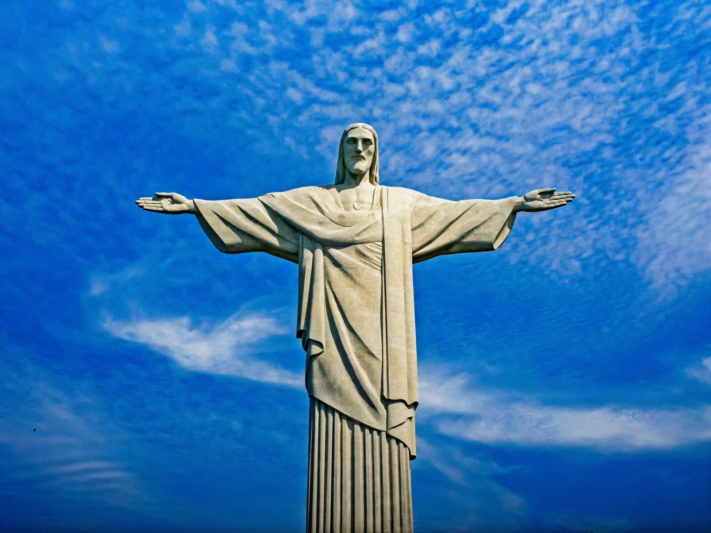

A estátua do Cristo Redentor começou a ser pensada na metade do século XIX, quando o padre francês Pierre Marie Boss exercia suas atividades em uma igreja com vista para o Monte Corcovado. A ideia de erguer um monumento religioso foi resgatada em 1888 pela princesa Isabel. As primeiras ideias eram de homenagear a princesa por abolir a escravidão com uma estátua de tamanho exorbitante, mas majestade negou e reprovou a ideia, dizendo que o verdadeiro redentor era Jesus Cristo.
De concreto armado, o Cristo Redentor teve sua maior parte feita no Brasil, e o resto foi realizado na França, Paris, como partes do rosto e mão, e com apoio da população foi possível reunir fundos o suficiente para realizar a montagem da estátua, símbolo nacional e uma das maravilhas do mundo, sendo a obrigação de um brasileiro ir visitá-lo pelo menos uma vez na vida.

Machu Picchu
Do império Inca, esta cidade mesmo com centenas de anos de estudo nunca chegou-se a uma resolução concreta de sua motivação ou função por estar bem degradada por causa do grande período que se passou.
Entretanto, estudos antigos especulam que este era um local militar, mas atualmente defende-se outra teoria, a que era uma cidade completa, com moradias, sistemas agrícolas, bairros, templos, posicionada estrategicamente para não ser atacada e invadida, estando no topo de uma montanha, rodeada de densas florestas de difícil acesso. Este passeio é indicado a pessoas que amam história e gostam de descobrir um pouco mais do passado do nosso continente.
Perito Moreno
Um enorme paredão de gelo com coloração azul e branca de 60 metros de altura e 5 quilômetros de extensão, na Argentina , atrai turistas de todo o mundo por ter uma beleza impressionante. Perito Moreno, homem que foi homenageado no nome da geleira, fora o criador da Sociedade Científica Argentina, além de historiador, explorador e naturalista, estudava diversas tribos indígenas da região da Patagônia. A galeria é um lugar lindo para se visitar, com a grama dando um destaque em volta do grande bloco de gelo, com temperaturas baixas o ano todo, é um passeio para quem gosta de frio e de se aventurar.